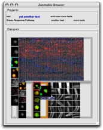
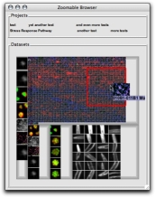

The dataset views contain miniaturized thumbnails for each of the images in a dataset. The space allocated to each dataset is proportional to the logarithm of the dataset size. This allows very large datasets to be shown alongside much smaller datasets, without overwhelming (as would likely happen if display size was linearly proportional to the dataset size), but it also means that thumbnails can be very small when datasets are large.
When the mouse is moved over a thumbnail, a tooltip will provide additional detail that might be useful for interpretation. If the thumbnail is relatively large, this tooltip will only contain the name of the image. For smaller thumbnails, the tooltip will contain a larger thumbnail. If the image is found in other datasets, the appropriate thumbnails in those datasets will be highlighted.
|  |
| Fig 4-1: When the mouse is been moved over a thumbnail, a tooltip containing more detail is displayed. |
A progressive zoom facility is provided for navigating large datasets. When the mouse is moved over a thumbnail in a large dataset, a mouse click will lead to an animated zoom to a display containing a subset of the images in the datasets. Subsequent clicks will zoom in further, untilthe number of thumbnails displayed is small enough to allow for individual viewing.
|  |
| Fig 4-2: Zooming for more detail on a large dataset. When the mouse is moved over a thumbnail in this dataset, a mouse click will cause the display to zoom in. |
To zoom out of a zoomed-in display, right-click on an image. A popup-menu context menu will be displayed. The first choice on this menu is "Zoom out". This menu also contains choices for viewing the image in the OME image viewer, and viewing the image information.
{kind=link}
{kind=link}